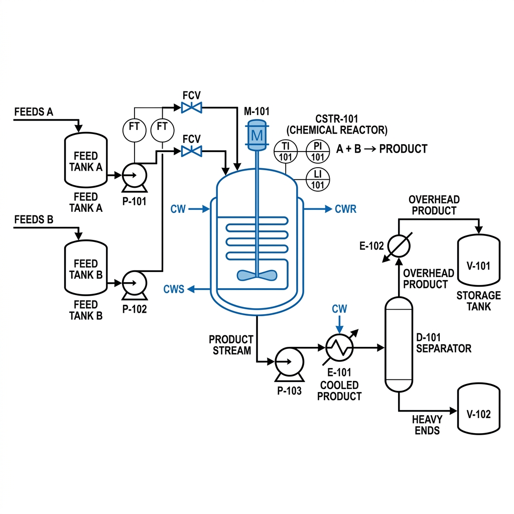
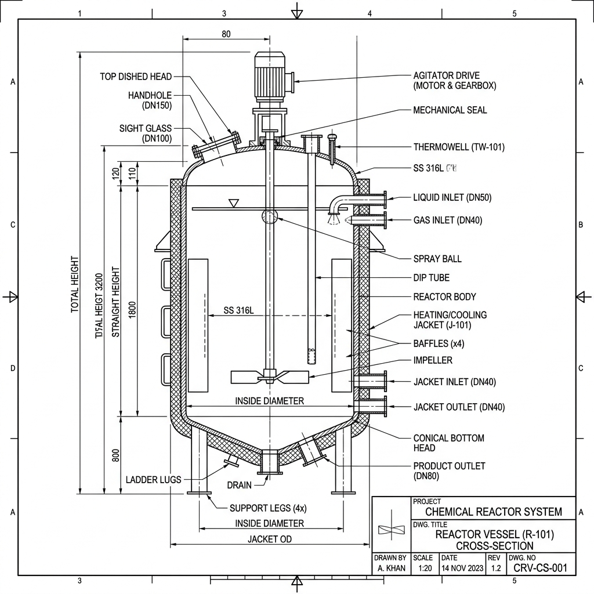
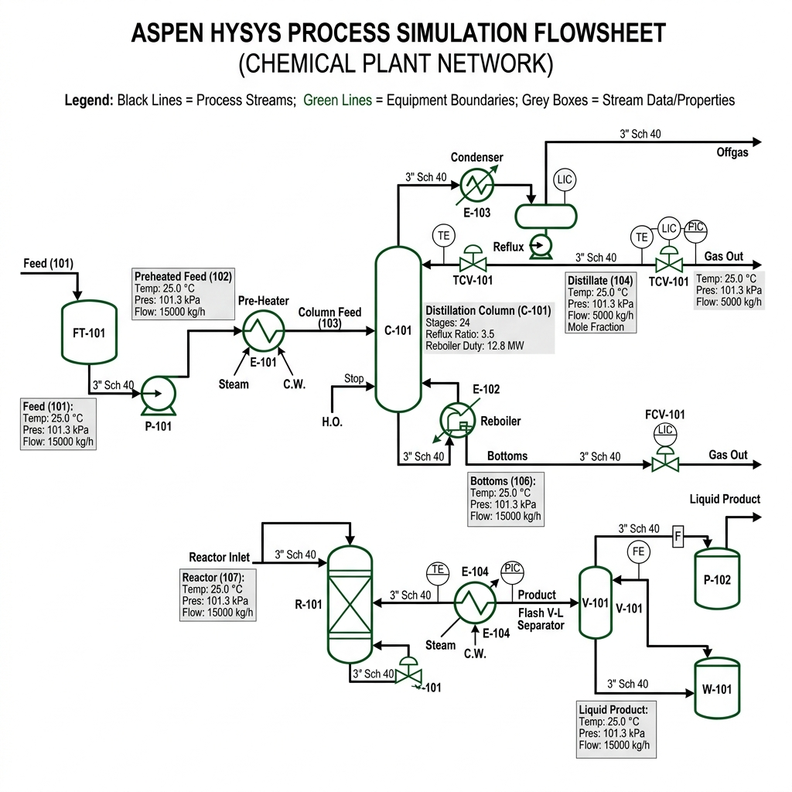

BRIN Research • C-Refinery Group
Designed · Analyzed · Evaluated

Fig. 1 — Process Flow Diagram (PFD) for CO₂ Hydrogenation to Methanol drafted in AutoCAD
| CO₂ in | 100.0 kg/hr |
| H₂ in | 13.8 kg/hr |
| Recycle stream | 315.2 kg/hr |
| MeOH out | 72.7 kg/hr |
| H₂O out | 40.9 kg/hr |
| Carbon Conv. | > 95% |
| Q (STP) | 1,200 m³/hr |
| GHSV | 5,000 h⁻¹ |
| Tube velocity | 3.2 m/s |
| ΔP (tubes) | ≤ 1.5 bar |
| HEX area | 120.0 m² |
| Pressure | 75 bar |
| T inlet | 220 °C |
| T hotspot (max) | 260 °C |
| XCO₂/pass | ~25% |
| Recycle ratio R | 4.2 |
| ΔHrxn | −49.5 kJ/mol |

Fig. 2 — AutoCAD Cross-Section: Dual-Bed Tubular Reactor Vessel
| Reactor Type | Dual-Bed Fixed Bed Tubular (Shell-and-Tube) |
|---|---|
| Operating T | 210–250 °C • interstage cooling ≤ 210 °C |
| Operating P | 75 bar |
| Catalyst | Cu/ZnO/Al₂O₃ • pellets 3 mm × 3 mm |
| No. of Tubes | 680 tubes • OD 38 mm • L 3.5 m |
| Shell ID | 1,200 mm • wall thickness 45 mm |
| Catalyst load | 1.2 T total charge |
| Shell material | SS316L (75 bar ASME service) |

| # | Component | Material | Qty | Specification | Function |
|---|---|---|---|---|---|
| 1 | Reactor Shell | SS316L | 1 | ID 1,200 mm · t 45 mm · L 5,500 mm | High-pressure containment (75 bar) |
| 2 | Catalyst Tubes | SS316L | 680 | OD 38 mm · t 3 mm · L 3,500 mm | Catalyst bed & heat-transfer surface |
| 3 | Catalyst Charge | Cu/ZnO/Al₂O₃ | 1.2 T | Cylindrical 3 mm × 3 mm pellets | CO₂ hydrogenation reaction site |
| 4 | Tube Sheets | CS + SS316 clad | 2 | Ø 1,400 mm · t 80 mm | Tube bundle sealing & retention |
| 5 | Cooling Jacket | A516 Gr.70 CS | 1 | Ø 1,500 mm · insulation 50 mm | Boiling-water coolant loop |
| 6 | Transverse Baffles | CS A36 | 6 | Ø 1,400 mm · 25% segmental cut | Shell-side flow routing & support |
| 7 | HP Separator | SS316 | 1 | ID 800 mm · t 35 mm · H 2,200 mm | Methanol condensation & phase separation |
Gained comprehensive experience designing an industrial-scale reactor system end-to-end. I learned how to translate theoretical reaction kinetics and mass balances into mechanical AutoCAD equipment designs, developing a deep understanding of thermal management limitations in highly exothermic catalytic operations.
The project's design and operating parameters are strictly modeled under ideal, steady-state simulations using literature kinetic rate constants. Real-world catalyst decay, localized hot-spots, and flow distribution abnormalities inside the tubes can only be verified with physical laboratory scale validation.
My next step is to further study and simulate the transient process flows in ASPEN HYSYS to analyze startup behavior and feed variations. Furthermore, I aim to conduct experimental validation using micro-reactor tests once laboratory-scale testing begins.